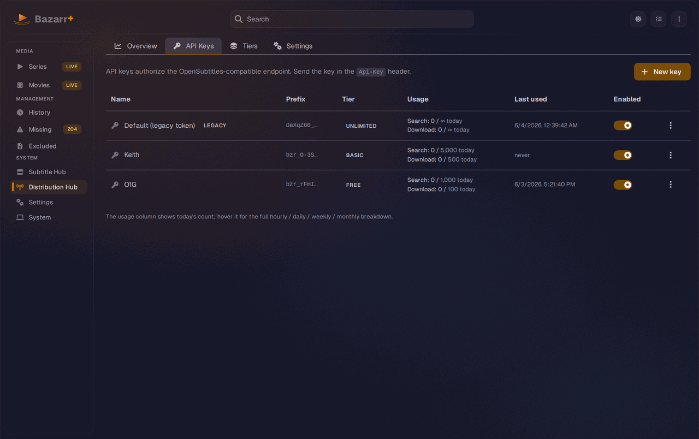
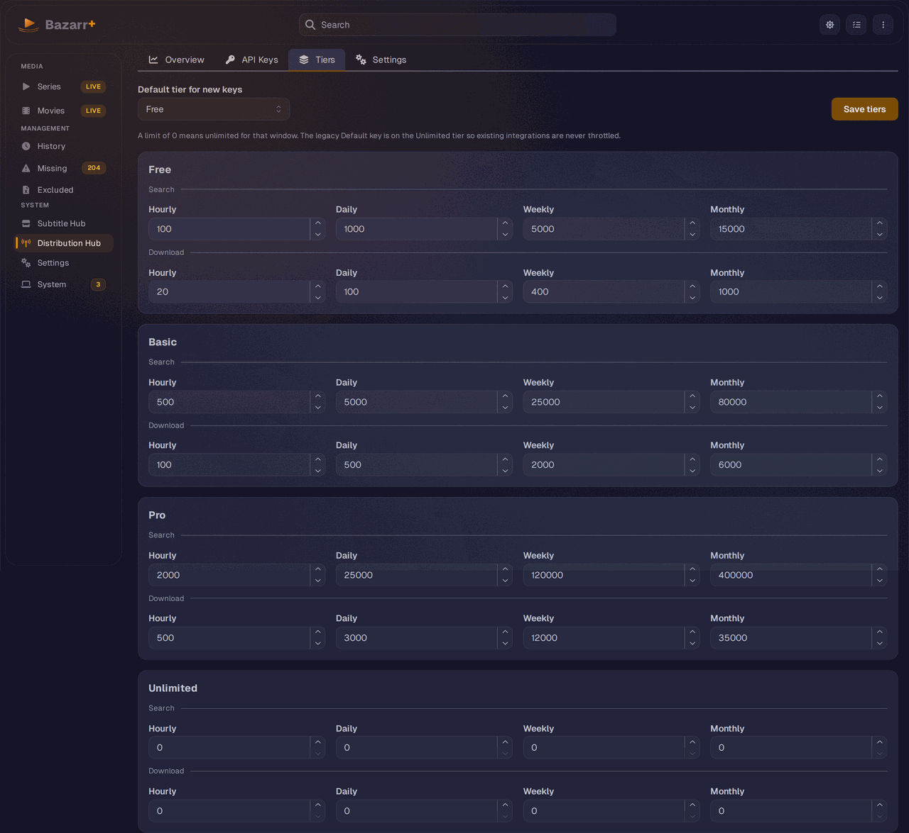
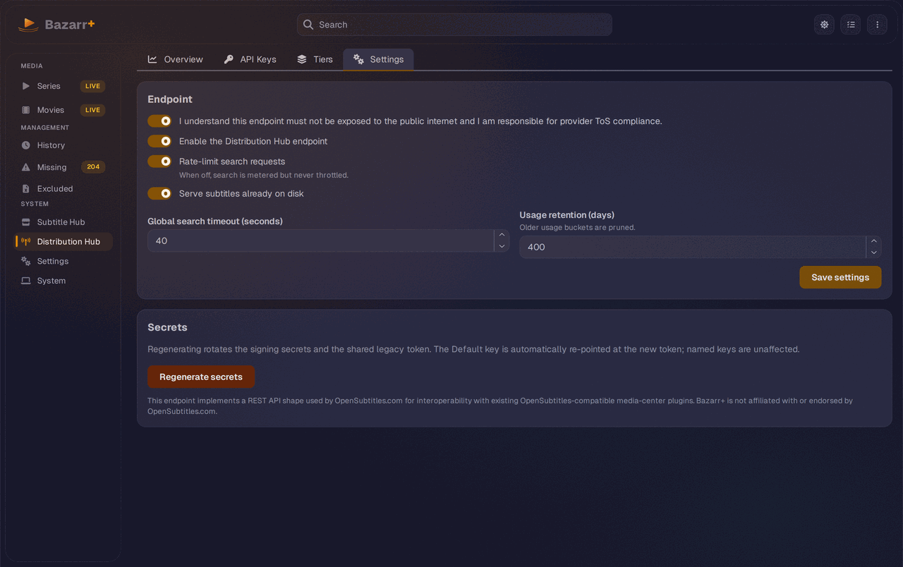

Bazarr+ v2.4.0 (Prism) adds the Distribution Hub: a control plane that turns Bazarr's OpenSubtitles-compatible /api/v1 endpoint into a multi-tenant subtitle API. Instead of one shared token, you issue many named API keys, give each a rate-limit tier, meter and throttle usage per key, and scope each key to the providers it may reach. Then you hand those keys to your downstream clients: a Jellyfin plugin, VLSub, or a custom app.
What the Distribution Hub adds
The Distribution Hub is the new top-level menu item (tower-broadcast icon, route #/distribution-hub). The page itself is the admin-authenticated control plane under /api/distribution-hub. The data plane it manages is the public, OpenSubtitles-compatible endpoint mounted at <your base URL>/api/v1, which external clients authenticate against with an Api-Key HTTP header.
- Named API keys: issue one key per client instead of sharing a single token. Each key has a name, a prefix, its own tier or custom limits, and its own provider scope.
- Rate-limit tiers: editable preset tiers (Free, Basic, Pro, Unlimited) define search and download limits across four windows (hourly, daily, weekly, monthly).
- Per-window metering and rate limits: usage is counted in hourly buckets that survive restarts. Keys that exceed their tier are throttled (429 on search, 406 on download).
- Per-key provider scoping: allow or exclude specific providers per key, including the reserved
localname for on-disk subtitles. - One home for the compat endpoint: the Distribution Hub replaces the old Settings > External Integration page as the single place to enable, configure, and meter the OpenSubtitles-compatible API.
The four tabs
The Distribution Hub has four tabs: Overview, API Keys, Tiers, and Settings.
The Overview tab shows four stat cards (Searches today, Downloads today, Active keys, Throttled over 30 days), a 30-day usage chart, and a Top keys table.

The API Keys tab is where you create, edit, rotate, disable, and delete keys. The table lists each key by name, prefix, tier, today's usage, last used, and an enabled switch.

The Tiers tab holds the editable limit grid for each preset tier and the default tier new keys inherit.

The Settings tab carries the consent and enable switches, the global search timeout, usage retention, secret regeneration, and the OpenSubtitles affiliation disclaimer.

Named API keys
Open the API Keys tab and click New key. The key editor opens in create mode with these fields:
- Name (required): how the key shows up in the table and usage stats.
- Tier: pick a preset tier, or skip it to inherit the default tier.
- Excluded providers: providers this key skips on search unless a request overrides it.
- Allowed providers: restrict the key to only these providers. Leave empty to allow all.
- Search timeout override (seconds): a per-key value from 5 to 120. Leave empty to use the global timeout.
- Custom rate limits (override the tier): a switch that reveals hourly, daily, weekly, and monthly inputs for Search and Download. A value of 0 means unlimited.
- Note: free text for your own reference.
Click Create key. The full token is returned once in the "Copy your API key" modal.
bzr_…. Bazarr+ stores only a SHA-256 hash and an 8-character prefix, never the full token, so the table shows only <prefix>…. Copy the token immediately and store it securely. If you lose it, you rotate the key to get a new one. You cannot retrieve the old one.
Each key row carries an Enabled switch and a ... actions menu:
- Rotate token: issues a fresh token while keeping the key's id and usage history. The new token is revealed once. The old token stops working.
- Disable: toggle the Enabled switch off. A disabled key is rejected on the data plane (treated as unknown). There is a short in-memory resolve cache (about 30 seconds) before a disabled or rotated key is fully rejected.
- Delete: removes the key after a confirm. Apps using that key stop working immediately, and this cannot be undone.
- Edit: reopens the editor to change the tier, custom limits, timeout, provider lists, or note.
Tiers and metering
Tiers are reusable limit profiles. Bazarr+ ships four presets: Free, Basic, Pro, and Unlimited. Each tier defines search and download limits across four windows: hourly, daily, weekly, and monthly.
In the Tiers tab you edit the numbers per window and click Save tiers; your edits are merged over the presets and stored. The Default tier for new keys selector decides which tier a new key inherits when you do not pick one explicitly. It resolves to Free if unset.
How metering works in practice:
- Search is metered on admission, before the provider fanout. Even failing or empty searches count, so a client cannot spam failed searches to evade its limits.
- The tightest binding window wins. A key is throttled as soon as any one of its windows (hourly, daily, weekly, monthly) is exceeded.
- Resolution order is custom override, then tier. If a key has custom rate limits switched on, those win over its tier.
- Search throttling returns 429 (for non-Unlimited keys); download throttling returns 406. Invalid Api-Key returns 403 and invalid JWT returns 401, so the OpenSubtitles status-code contract is preserved.
- Metering is best-effort. It counts usage in hourly buckets that survive restarts, but it never causes a subtitle request to 500.
If you turn off Rate-limit search requests in the Settings tab, searches are still metered (counted) but never throttled.
Per-key provider scoping
Each key can be scoped to a subset of your providers. Two lists do the work, and a key default can be narrowed (never widened) at request time.
- Excluded providers: a default list of providers the key skips on search. A request can override it with
?exclude_providers=. - Allowed providers: restricts the key to only the listed providers. Empty means allow all. Exclusions still apply on top.
?only_providers= value intersects with the key's allowed list. It can never reach a provider outside that list, which makes the allowed list an authorization boundary, not just a default.
The only_providers parameter is three-state by presence. Omitting it means "no allow-list, every provider in play." A present-but-empty value (?only_providers= or only whitespace and commas) is a deliberate "select nothing" and returns an empty result set, which is kept distinct in the cache from omitting the parameter.
The reserved provider name local governs on-disk subtitles in the same allow and exclude knobs. With an allow-list active, locals are served only when the list names local. With no allow-list, locals follow the global "Serve subtitles already on disk" setting unless local is explicitly excluded. The local name only appears in the pickers and discovery when that global setting is on.
To see exactly which provider names a key can reach, a client can call the discovery endpoint:
curl -H "Api-Key: bzr_your_token" https://your-bazarr/api/v1/providersQuickstart
- Open Distribution Hub from the left main menu.
- Go to the Settings tab. Tick the consent switch and Enable the Distribution Hub endpoint, then click Save settings. If a Restart required banner appears, restart Bazarr so the
/api/v1routes are mounted. - Open the API Keys tab and click New key.
- Enter a Name, pick a Tier (or set custom hourly/daily/weekly/monthly limits), optionally set a search timeout and the allowed or excluded providers, then click Create key.
- In the "Copy your API key" modal, click Copy and store the
bzr_…token. It is shown only once. - Point your client at
<your base URL>/api/v1and send the token in theApi-Keyheader. Hand the token to your Jellyfin plugin, VLSub, or app.
curl -H "Api-Key: bzr_your_token" \
"https://your-bazarr/api/v1/subtitles?query=Dune&languages=en"Clients may add ?exclude_providers=, ?only_providers=, and ?timeout_seconds= on /api/v1/subtitles to narrow a key per request. For full client setup (Jellyfin, VLSub), see the External Integration guide.
Upgrading from v2.2 or v2.3
The upgrade is transparent. Existing integrations keep working without any change on your side.
- Your old shared token is auto-seeded. On first boot, the previous shared compat token becomes a single non-deletable key named "Default (legacy token)" on the Unlimited tier, flagged with a gray
legacybadge. Existing Jellyfin and VLSub clients keep authenticating, and because it is Unlimited, the legacy token is never throttled. - The External Integration page is gone. The old Settings > External Integration page is removed, and
/settings/externalnow redirects to the Distribution Hub. Its consent toggle and disclaimer moved into the Settings tab; the inline legacy-key rotate moved into the API Keys tab. - Recover the shared token. The legacy Default key's ... menu shows Reveal token instead of Delete. It calls the legacy-token endpoint and shows the current shared token in a re-viewable modal, so you can copy it to a new client without breaking the others.
- Rotate the shared token. The legacy key cannot be deleted and cannot be rotated through the normal rotate action. Rotate it with the legacy key's Rotate token action or with Regenerate secrets in the Settings tab. Both run the regenerate flow, which rotates the signing secrets and the shared token together, re-points the Default key at the new token, and reveals it once. Every client still on the old token must re-paste the new one. Named keys are unaffected.
compat_api_keys and compat_usage tables and the allowed_providers column. These run automatically on first start after upgrade. Existing settings, providers, and the shared token carry over.
Troubleshooting
I enabled the endpoint but clients still cannot reach it. Enabling at runtime sets the flag but does not mount the routes. The /api/v1 blueprint is chosen once at startup, so the "Restart required" banner stays up until you restart Bazarr. Restart, and the banner clears.
A client gets 403. The Api-Key is invalid, disabled, or was rotated. Confirm the client sends the exact bzr_… token in the Api-Key header. If you just disabled or rotated the key, allow up to about 30 seconds for the resolve cache to expire.
A client gets 429 on search or 406 on download. The key hit a rate limit on one of its windows. Move it to a higher tier, set custom limits, or use the Unlimited tier. Remember a limit of 0 means unlimited.
A search returns no providers (empty data). The key's allowed list, or a per-request only_providers, resolved to nothing. A present-but-empty only_providers intentionally returns an empty set. Check the allowed and excluded lists, and call /api/v1/providers to see what the key can actually reach.
On-disk subtitles are not served. Local subs need the global "Serve subtitles already on disk" setting on, and when an allow-list is active, the reserved local name must be in it. The local name only appears in the pickers when that global setting is on.
I lost a named key's token. It cannot be retrieved. Rotate the key to get a new token, then update the client. Only the legacy Default key supports re-viewing its token.
Next steps
- External Integration for setting up Jellyfin and VLSub clients against the endpoint
- Provider Hub to install and manage the subtitle providers your keys can scope to
- Getting Started if you have not installed Bazarr+ yet